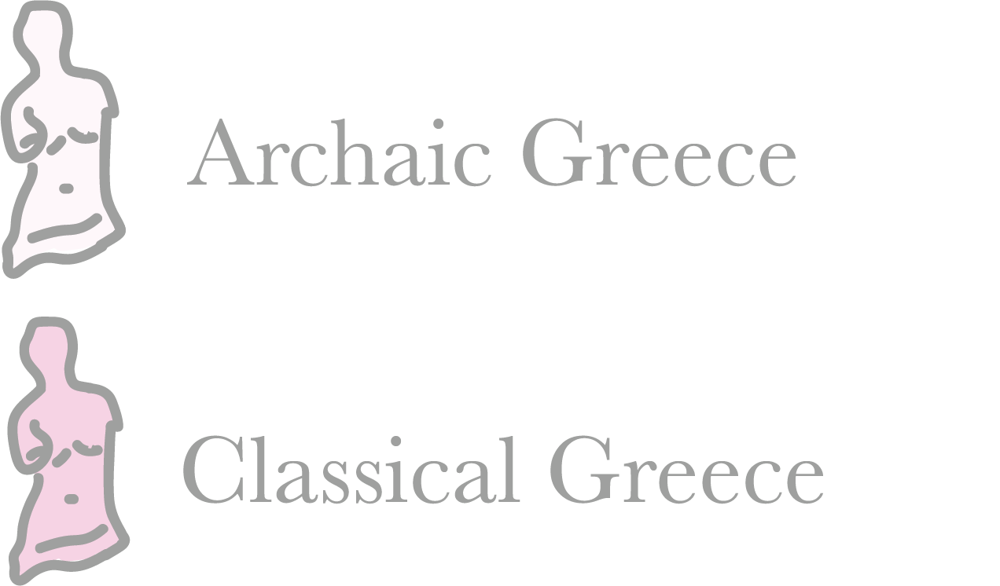
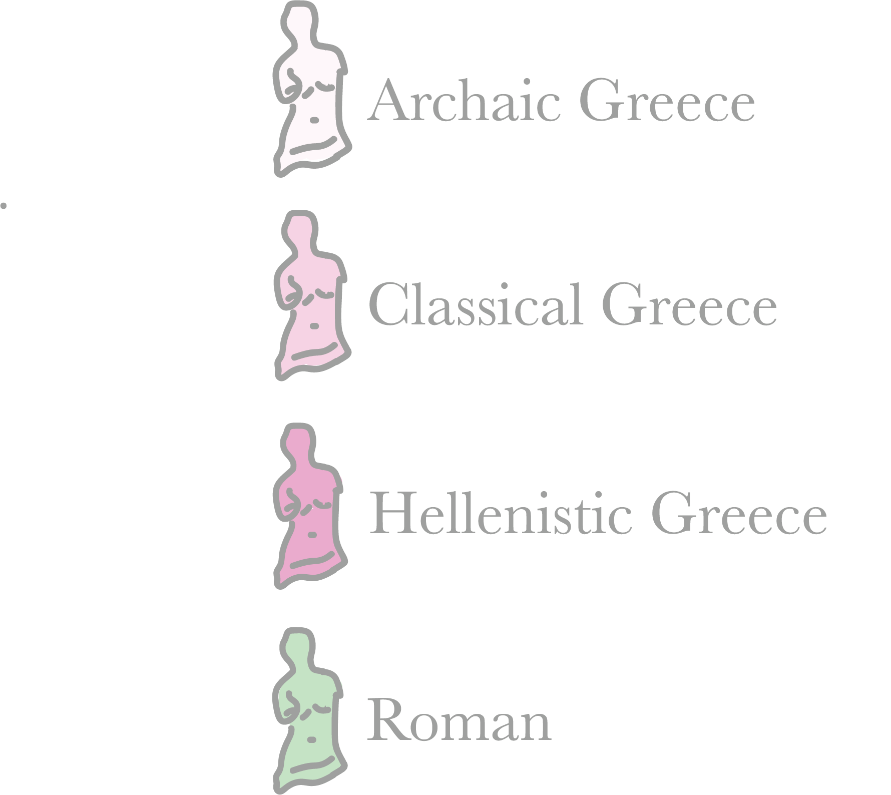

Heavenly Bodies
Style in ancient Greek sculpture changed immensely over time.
Sculpture-making spanned three main periods: Archaic, Classical, and Hellenistic.
Archaic Greece
As one of the earliest periods in ancient Greek art, the Archaic period ushered a naturalistic style, especially in depictions of the human form.
Influences from Egypt and the Near East are seen in motifs added to vases and figurines, while the dress, hair, and facial construction of sculptures were obviously reminiscent of Egyptian style.
An effort to achieve likeness in rendering the human figure is apparent in the freestanding votive sculptures of young men, or kouroi.
Hover/click on an icon to view statue details and view their great Egyptian likeness.
Classical Greece

Ancient Greek art styles quickly began changing after victory in the Persian wars, coining the Classical period.
Traditionally, this period is considered the peak of artistic perfection.
As life became easier and more opulent, Greek sculpture became so as well.
Naturalism in art also reached its epoch, and sculpture was meant to replicate how humans really looked.
Nudity became increasingly common in this art period as well - the human body was considered a thing of great beauty and admiration.
The city of Athens dominated the burgeoning cultural scene - the building of the Parthenon and its associated sculpture paved the way for unprecedented artistic achievements.
Hellenistic Greece

The Greek world rose anew admist the vivacity of Alexandar the Great's conquests, which lent to a new, prosperous social structure.
This contact with new cultures disseminated Greek culture and its arts, and exposed Greek artistic styles to a host of foreign influences.
Hellenistic sculpture is defined by its intense emotional appeal and growing emphasis on individual character.
These sculptures are but a fragment of the abundance the Greeks created.
This map shows the huge breadth of the once mighty and glorious Greek empire. Their art was just as pervasive.
Much of the work of famous Greek sculptors, like Praxiteles, was destroyed by the Romans. Bronze originals particularly were melted down to reuse the metal.

Because the originals were destroyed, the origins of most of the Roman recreations are unknown - Roman replicas have been found primarily near Rome. Zoom into Rome to see more detail.
A Confounding Greek Masterpiece
One of the most famous and masterful pieces of Greek sculpture is Venus de Milo.

Venus de Milo was made and found on the Greek island of Milos.
Milos island's pristine blue waters
In ancient Greece, Milos island was a hub for its mineral wealth. It faced ever-evolving rule, destruction, and freedom. In more peaceful periods, the arts flourished, bringing about the creation of such statues as Venus de Milo.
Venus de Milo was found here in 1820 and immediately given to Louis XVIII. He presented Venus to the Louvre in 1821, where she remains today.
- Katerina Tsatsaroni
- Katerina Tsatsaroni PUT AT END OF STORY
There's a current, fervent campaign to return Venus to her homeland.
As previously mentioned, the Louvre has held Venus hostage since she was discovered.
She's not missing her arms - she's missing her home.
But Venus isn't the only body without a home.
Many museums today possess statues which belong to cultures outside their boundaries.
Click a museum icon to see what statues they hold.
Only a fragment of these Greek masterpieces remain un-orphaned.
These sculptures, particularly those made for the Acropolis of Athens, are showcased by their Greek mothers.
Absence as placeholders
Similar to Venus de Milo, upon discovery, the Parthenon Marbles were shipped to the British Museum.
The British Museum has held this culture prisoner for over 200 years.
The Greeks are vehemently distraught over these losses - controversy over the marbles has existed since they were unveiled from the Parthenon ruins.
acropolis museum cemetery for the parthenon sculptures. the acroplis museum wants the statues back bad. they have plaster replicas, just waiting for their return. british museum won't give them back after many attempts. include stuff about colonialism and imperialism - these are the reasons why british and french ever have these statues - what were they doing in greece in the first place. greek artifacts are specifically important to them because they have national cultural heritage in antiquity. british museum is widely known for improper usage of artifacts - rosetta stone, moai, etc. wrap up story and include quote at the end.
Created by Sophie Michalski and Claire Harned
Sources:
Ancient Greek, Art Institute of Chicago
Greek Collection, University of Saskatchewan
Art of the Hellenistic Age and the Hellenistic Tradition, The Met
Ideal Greek Beauty, Louvre
History of Milos Island
Take Aphrodite Home
The New York Times
Elgin Marbles, Brittanica